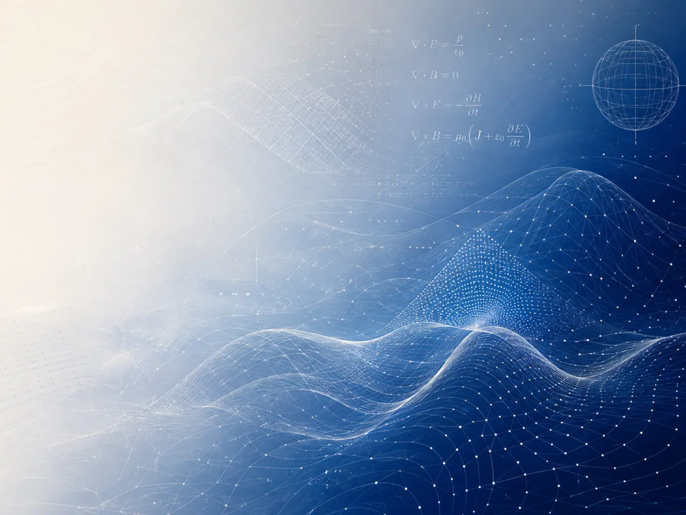

Boundary integral equations
Stable formulations for frequency- and time-domain electromagnetic scattering.
Postdoctoral Researcher · Ghent University — imec
I develop robust boundary and finite element methods for electromagnetics and partial differential equations — connecting rigorous analysis with reliable scientific computing.

Research at a glance
My work sits at the interface of applied mathematics and computational engineering, with a focus on methods that remain accurate and efficient in challenging physical regimes.
Stable formulations for frequency- and time-domain electromagnetic scattering.
Space–time discretizations and interface-fitted schemes for moving-domain problems.
Operator preconditioning and numerical algorithms for reliable engineering simulation.
Selected work
Explore my research topics, recent publications, academic experience, and scientific profiles.